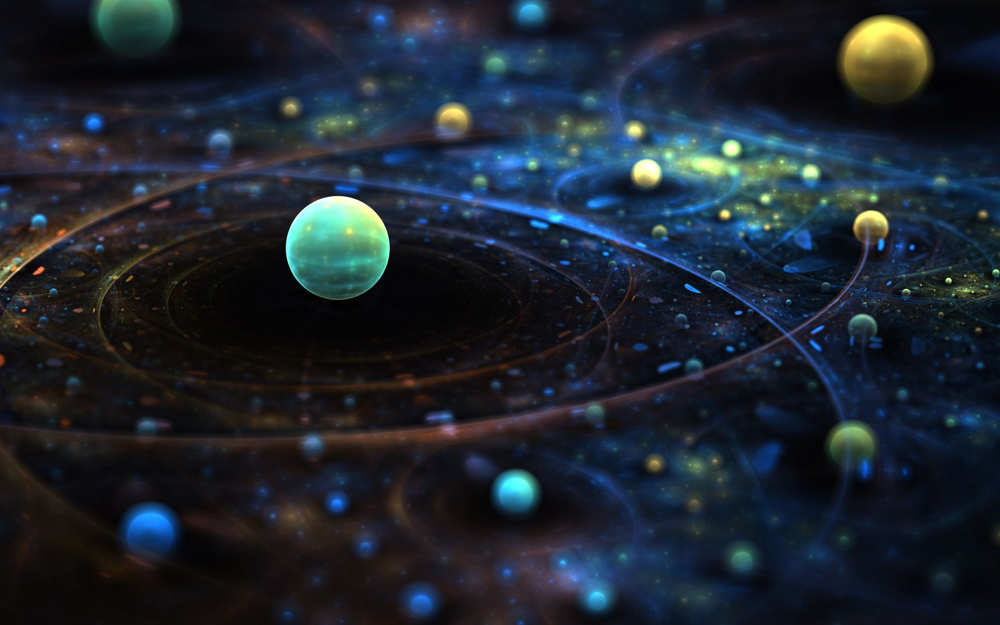

Los planetas son cuerpos celestes que giran alrededor de una estrella, de la que reciben su luz. En el Sistema Solar esa estrella es el Sol. Los planetas que giran en torno a otras estrellas que no son el Sol se llaman planetas extrasolares. Estos planetas tienen una masa mayor a la de Júpiter, el planeta más grande del Sistema Solar. El primer planeta extrasolar se descubrió en 1995.
Los planetas son objetos astronómicos que tienen varias características distintivas: 1. Órbita alrededor de una estrella: Los planetas giran en órbitas elípticas alrededor de una estrella, como el Sol en nuestro sistema solar. 2. Forma esférica: Los planetas tienden a tener una forma casi esférica debido a la gravedad que actúa sobre ellos, redondeándolos con el tiempo. 3. No emiten luz propia: Los planetas no generan su propia luz, sino que reflejan la luz de la estrella alrededor de la cual orbitan, lo que les permite ser visibles en el cielo nocturno.
En nuestro sistema solar, los planetas incluyen Mercurio, Venus, Tierra, Marte, Júpiter, Saturno, Urano y Neptuno. Además de los planetas, hay otros objetos en el sistema solar, como asteroides y cometas, que siguen órbitas similares alrededor del Sol, pero no cumplen completamente con las características de un planeta.
Hasta agosto de 2006 el Sistema Solar estaba formado por nueve planetas. Sin embargo, el descubrimiento en 2005 de Eris, otro cuerpo celeste un poco más grande que Plutón, hizo replantearse a los científicos la definición de planeta del Sistema Solar. Finalmente, en agosto de 2006, la Unión Astronómica Internacional estableció las condiciones que debía cumplir un cuerpo para ser planeta del Sistema Solar y creó una nueva clase de objetos celestes: los planetas enanos. Plutón, Eris y Ceres pasaron a formar parte de los planetas enanos.
En resumen, los planetas son cuerpos celestes que orbitan alrededor de una estrella, como el Sol en nuestro Sistema Solar. Estos objetos astronómicos presentan características distintivas, como órbitas elípticas y formas esféricas, siendo visibles en el cielo nocturno al reflejar la luz solar. En adición, es interesante destacar que, al igual que los planetas orbitan al Sol, muchos de ellos también son acompañados por lunas que giran a su alrededor. Este fenómeno contribuye a la complejidad y diversidad del sistema planetario, donde cada cuerpo celeste desempeña un papel único en la vastedad del universo.